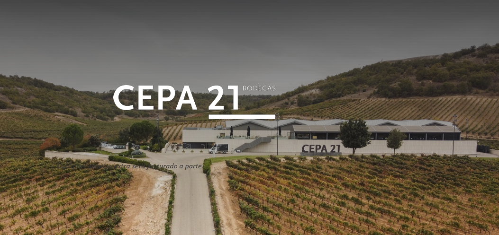
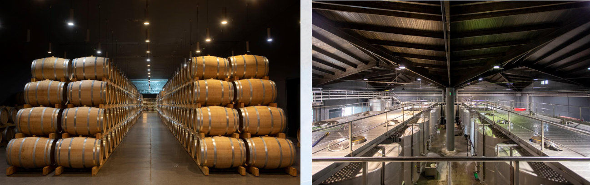
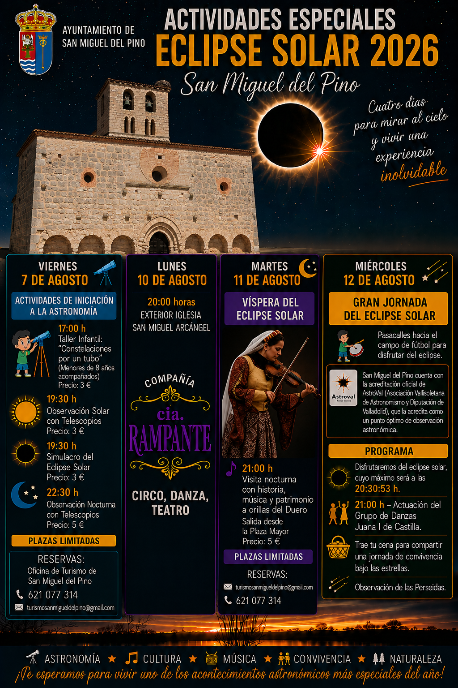

The solar eclipse (August 12, 2026)
Tordesillas lies within the path of totality of the solar eclipse of 12 August 2026. It will be the first total solar eclipse visible from mainland Spain since 1912! In the vicinity of Tordesillas, the totality phase will last approximately 1 min 13 s. For longer durations one may try getting close to the central path. For example the totallity will last about 1 min 27 s in Valladolid, 31 km away from Tordesillas, and about 1 min 42 s in Palencia, 80 km away.
The afternoon is left free so participants can either enjoy the eclipse from the conference site or, in the unlikely case of cloudy weather, try their luck at another location, perhaps also a bit closer to the central line.
ECLIPSE IN A VINEYARD
If you would like to experience the eclipse from a famous vineyard CEPA 21 located closer to the central line of totality (offering 1 minute 36 seconds of totality), a special excursion is available exclusively for conference participants. The cost is €45 per person (not included in the conference fee). As this is a group rate, if you are interested in joining the experience, please contact the organizers before July 30.

Experience Programme
6:00 PM – Welcome and Winery Tour
We will begin with a guided tour of the winery facilities, where participants will learn about the winemaking process and the philosophy behind the winery.
7:00 PM – Wine Tasting
Following the tour, we will enjoy a standing tasting in the winery lobby featuring two of the winery’s most representative wines: Cepa 21 and Malabrigo. The tasting will be accompanied by cheese tapas.
The tour and tasting will last approximately 1 hour and 30 minutes. Afterwards, participants will have an additional 20–30 minutes to enjoy the surroundings before departure.

8:00 PM – Transfer to the Vineyard
Buses will depart from the designated meeting point and take participants to the vineyard.
Eclipse Viewing
Once at the vineyard, we will observe the solar eclipse in an exceptional setting while enjoying a glass of Hito Rosado. Water will also be provided to all attendees.
9:30 PM – End of the Experience
ECLIPSE IN THE NEIGHBORHOOD
The municipality of San Miguel del Pino, a village located just 3.3 km from Hotel El Montico and accessible via a pleasant walking path that runs partly along the Douro River, is organizing a public eclipse-viewing site. The observation of totality will be followed by local dances and a shared community dinner (bring your own food), with the evening continuing under the stars for a viewing of the Perseid meteor shower. It promises to be a wonderful opportunity to experience the eclipse together with the local community and to continue the celebration well into the night.

Other local sites with organized eclipse viewing and various public outreach events are listed at the pages of the Valladolid Astrotourism Association (Astroval), see the map.
TRÍO DE ECLIPSES
As we prepare to experience the 12 August 2026 total solar eclipse together in Tordesillas, we warmly recommend exploring the official Trío de Eclipses website, launched by the Spanish Government as a comprehensive resource dedicated to the three extraordinary trio of solar eclipses visible from Spain in 2026, 2027, and 2028. The website is packed with practical and scientific information, including detailed eclipse maps and trajectories, local visibility and timing information, observing and eye-safety guidance, travel and mobility advice, and updates on related public activities. Particularly useful are the interactive tools that allow visitors to explore how the eclipse will appear from a specific location and to assess possible obstructions near the horizon. Whether you are already planning every detail of your eclipse experience or simply looking forward to sharing this remarkable moment with fellow conference participants, the website is an excellent place to start.THE ECLIPSE APP
The interactive maps below, centred at the coordinates of the conference venue, are provided by (The Eclipse App) and allow users to explore the eclipse path, historical cloud conditions along the track, and the position of the Sun. Clicking on a location displays the duration of totality there. The app also includes a visualisation of the local topography and the shadows it casts - the sun position map shows the direction and angle of the sun during totality, as well as shading areas that will probably be obscured by terrain or buildings.
Closer to the date of the eclipse, The Eclipse App will also provide the actual cloud forecast.
The organizers thank Stephen Watkins and Jesse Tomlinson from the Eclipse App for providing these maps.
Check also other useful pages for following the eclipse
The solar eclipse prediction for Spain: https://www.timeanddate.com/eclipse/in/spain?iso=20260812
Interactive map with the totallity path: https://nso.edu/for-public/eclipse-map-2026/